去年，就有不少人吐槽，CES已經從消費電子展變成了AI展，火爆的展台幾乎都和AI原生相關。今年，照例出現了不少新鮮玩意——AI吊墜、AI陪伴玩偶、心理治療艙、AI枱燈等，但要説最大的變化，還是中國機器人企業組團亮相規模史上最大的一次。據展商分佈圖，數量達到了21家，在總計38家參展商中佔比58.8%——這一數字幾乎是美國參展企業數量的4倍，而韓國僅有5家，日本、德國、英國、法國則各僅有1家代表。
一位現場的參展商感嘆，到拉斯維加斯三天，連續兩天熬夜到夜裏4點，“幹完國內的幹國外的”，另一位參展商也對鳳凰網科技表示，“今年CES，中國企業的強度直接拉滿”。
如果説去年的AI還有點懸浮和假想，今年的產品讓我們看到，AI已經和硬件真正融為了一體。那些看起來雞肋、當下還用途不大的產品，可能就是未來世界的真實寫照。
讓AI更快落地，這恰恰是中國的優勢。
對了，初代機器人鼻祖波士頓動力，今年也帶着準備“進廠打工”的企業量產版電動 Atlas 亮相了，此時距離它誕生已經過去了13年，作為對比，中國現在一個成立才2年的企業，就已經可以年交付5000台機器人了。
不過，雖然走了不少彎路，但現代汽車在現場表示，計劃到2028年，每年生產3萬台Atlas。機器人已經到了一個臨界點，正如開幕首日，英偉達CEO黃仁勳在主題演講中宣佈的：“機器人領域已正式迎來屬於自己的‘ChatGPT時刻’。”
二代Atlas炸場亮相，但“中國學徒”也來掰手腕了
今年，收購了波士頓動力的現代汽車，帶着新出的二代電動Atlas首次走出實驗室，高調亮相，在舞台上打了一段翻轉靈活的“太極”。
在“谷歌給大腦，現代給身體”的強強聯合下，新版Atlas的首次亮相堪稱驚豔。
“它的腰可以360度旋轉，這一點就很牛”，一位中國人形機器人行業從業者對鳳凰網科技表示，“主要是構型特殊”，不分正面和反面，而是高度對稱設計，算法可以分配重心、關節角度和運動軌跡。
這也使得，比起市面上常見“步履蹣跚”的機器人，Atlas靈活度極高，關節可以翻轉、扭曲，甚至能夠平躺後原地起身，雙手還能反向握持。據現代分享表述，其設計初衷也是想讓人覺得這是一個有用的機器人，而非為了“像人”。
Atlas身高1米9，體重90kg，全身56個自由度，行走自然且流暢。其最大亮點是，全身每個關節和部件可以被快速拆卸和更換，大部分關節可以360度無死角旋轉。演示視頻中，它能夠單手提起50公斤的汽車零部件，自動避人、更換電池，全天不間斷工作。
這種關節全向旋轉的設計，能夠突破運動限制，也讓機器人更適配於高複雜作業環境的車間工廠。可以説，其誕生初期目的就是為了“進廠打工”。
波士頓動力自誕生起，就是全球機器人研製的標杆。一直到2022年，馬斯克攜人形機器人擎天柱入場，同期硅谷初創企業Figure誕生，才有了更多領先參照物。
隨着大語言模型不斷突破，特別是多模態層面的進展，讓AI突破物理世界的可能性急速上升。
中國機器人軍團正逢此時正式入場，今年CES就是組團亮相海外的首戰。
鳳凰網科技也整理了一份現場參展詳情，這些中國軍團分別是：
宇樹科技，和去年靠B2W機器狗載人刷屏不同，今年其在現場搭起了擂台，派出了最“能打”的拳擊格鬥小機器人G1量產版，展台周邊圍滿了華人面孔，“只看觀眾還以為CES在中國辦呢”，有人在評論區眼尖地評價道。
智元機器人，展示了遠征A2的交互與運動智能、靈犀X2的交互能力，以及靈巧手等核心部件。並在現場發布了一個大語言模型驅動的開源仿真平台Genie Sim 3.0，首創大語言模型驅動的場景泛化技術，還同步開源了上萬小時的仿真數據集，本質上是嘗試一個數字資產生成、場景泛化、數據採集到自動評測的全流程能力。
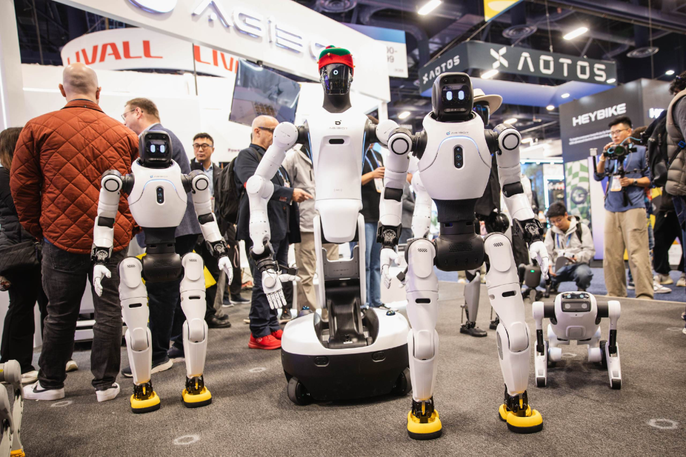
北京人形機器人創新中心，攜“具身天工2.0”、“具身天工Ultra”等多款機器人亮相CES 2026，後者正是曾經拿下馬拉松比賽冠軍的那台機器。
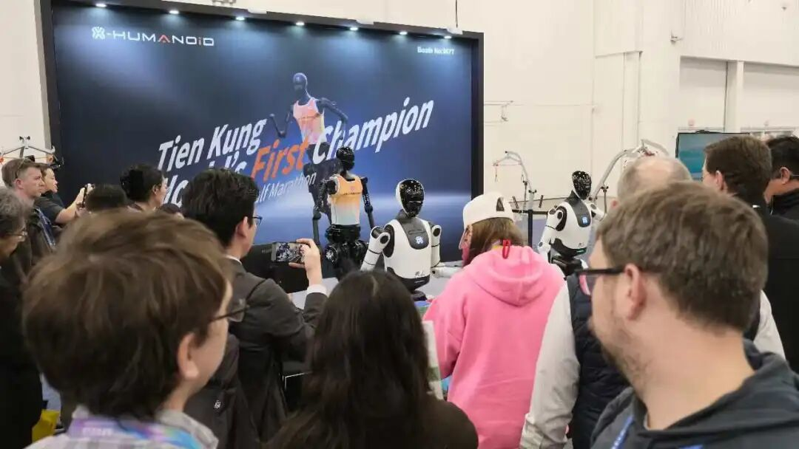
傅利葉智能推出了新一代全尺寸人形機器人“GR-3貓貓頭”；眾擎機器人首次亮相全尺寸極致高效能通用人形機器人眾擎T800；銀河通用則重點演示了其通用人形機器人平台的運動穩定性和AI決策能力。
魔法原子則捧出了“全家桶”，推出全尺寸通用人形機器人Gen1、高動態雙足人形機器人Z1，以及全球首款“頭尾聯動”四足機器人MagicDog。
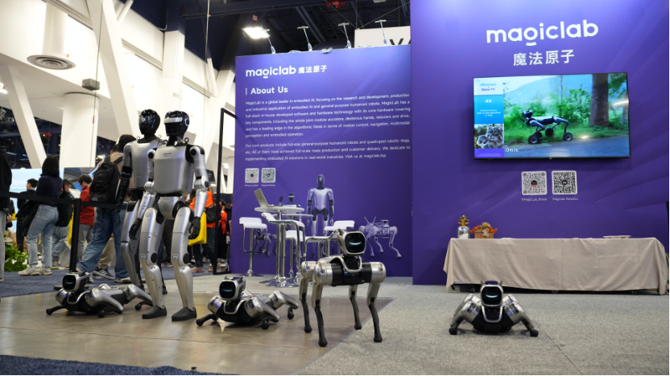
可以“撒手跑”，不用遙控的機器人也是本次展會的亮點，可能最先進家的消費級機器人維他動力Vbot超能機器狗，全球版預計將於 2026 年 Q2 正式發售，首批產品將率先登陸北美、歐洲與中東等市場。
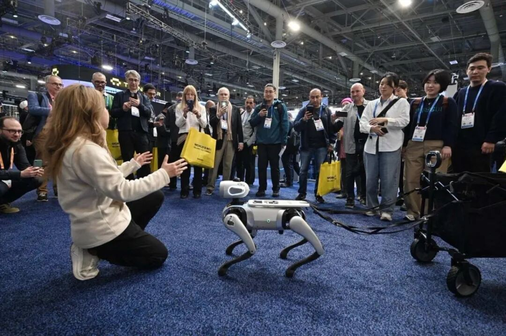
加速進化，應該是本次參展商中機器人出場數量最多的企業，數十台Booster K1組成機器人矩陣，帶來招財貓、新年祝福等不同主題的齊舞表演。
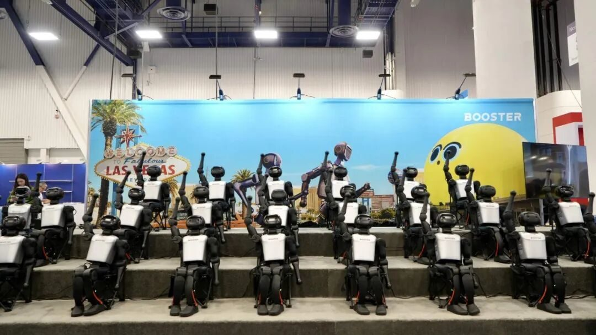
首屆機器人馬拉松大賽亞軍松延動力攜核心產品“小頑童N2”參展，展示了其高性能關節模組和動力系統；逐際動力的Tron2，可實現雙臂、雙足、雙輪足三種核心構型的快速切換，還支持人形、四足等形態重構。
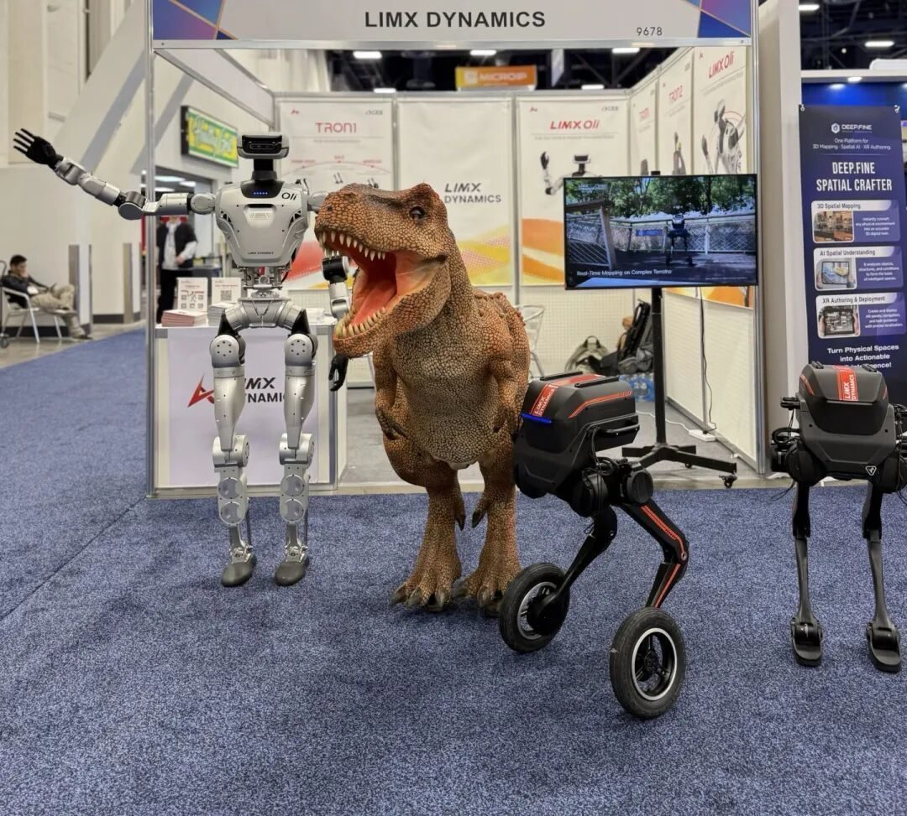
其他機器人形態中，雲深處科技帶來的應用輪足“山貓M20”機器人，能在-20℃至55℃的温度範圍正常作業；商用機器人企業擎朗智能帶來人形機器人XMAN-R1、清潔機器人C40與C55以及配送機器人T10，現場演示了多款機器人在協作中“上崗”服務流程。
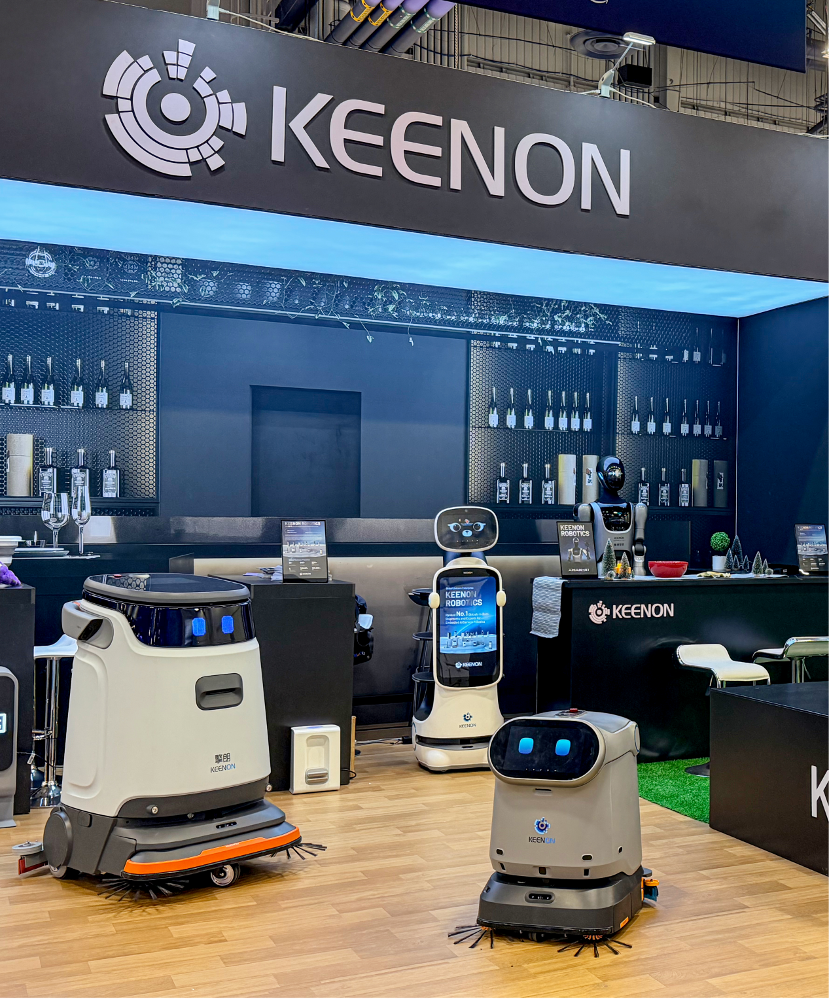
AI開始實用了？這裏是一些新思路
與往年相比，CES 2026上全球企業展示的重點發生了明顯轉變——從概念演示轉向實用化落地。
如果説，之前的AI更多是暢想，2026年就是AI賽道集體“秀肌肉”的落地之年，機器人便是最為典型的代表，打拳、跳舞、爬上爬下，甚至是進工廠、進家哄娃等能力一應俱全。加速進化的Booster系列機器人則直接面向科研、賽事等具體場景，其相關業務負責人告訴鳳凰網科技，官方帶去海外賽事的機器人總是會被搶購一空，“從使用情況來看，使用度也很高”。
這一次在現場Booster直接表演了一個舞獅，吸引了不少外國人圍觀。
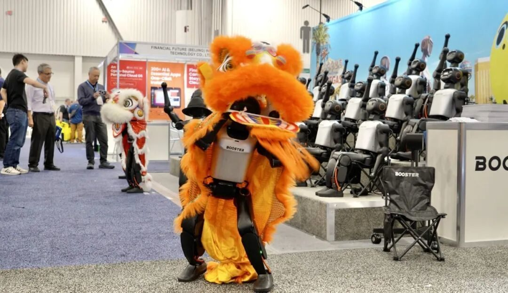
維他動力的Vbot，目前是國內同等機器人算力密度最高的，已實現初步的智能化，可智能跟隨擺脱遙控器，拉車、馱物已經基本不在話下，買回家可以幫大人哄哄娃。
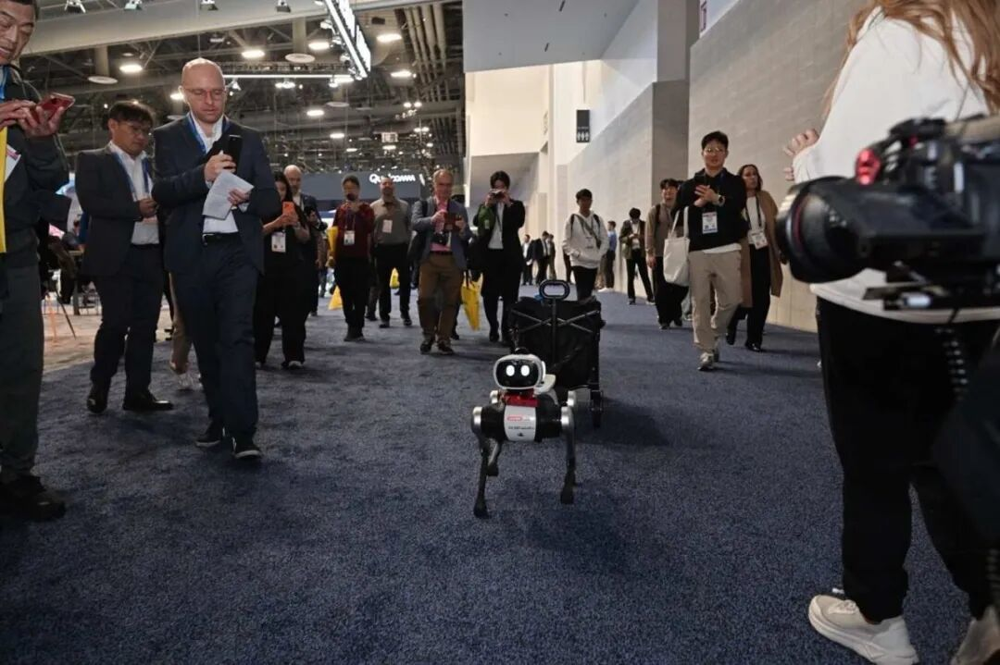
除了機器人，中國企業正在將AI能力融入到千行百業。
在智能清潔領域，追覓科技一口氣在 CES 2026 租用了三大展位，涵蓋掃地機器人、洗地機、割草機器人等智能清潔機器人，智能大家電以及電動汽車等新品類，新車在此首次亮相。
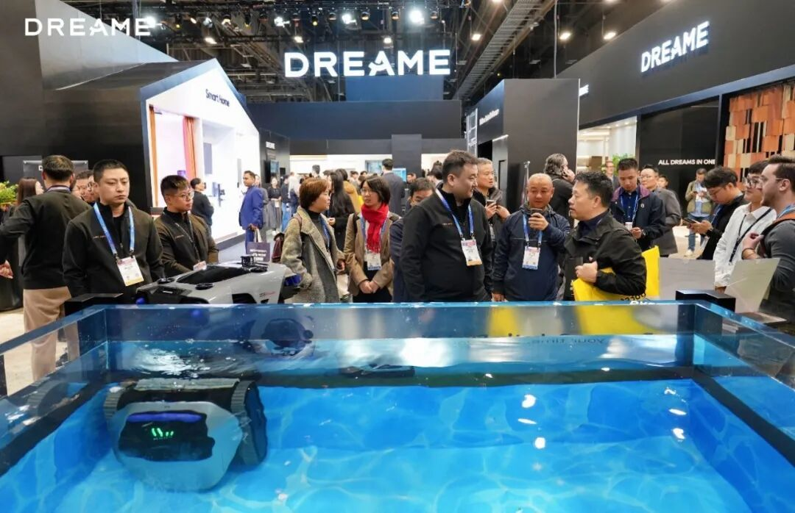
石頭科技，這次搞了個會爬樓梯的掃地機器人。
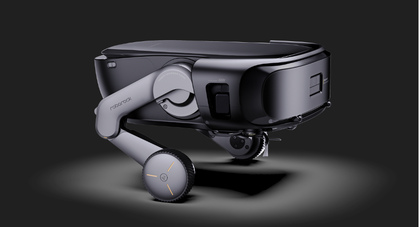
深圳創企Robotin的R2 Pro，作為全球首個完全模塊化的家用機器人系統，集吸塵、拖地、深度地毯清洗於一體，能在三小時內自主清洗並烘乾400平方英尺的地毯。
做户外陪伴的機器人公司深庭紀，帶來了一個長得類瓦力的小機器人，聚焦的是户外出行場景，核心是減負。
聚焦於青少年 AI Agent 的初創企業 Teeni.AI ，新品 Mooni Pro定位為孩子隨身攜帶的機器人，可完成拍攝、對話等交互，其核心探討的是AI如何進入下一代青少年的生活。
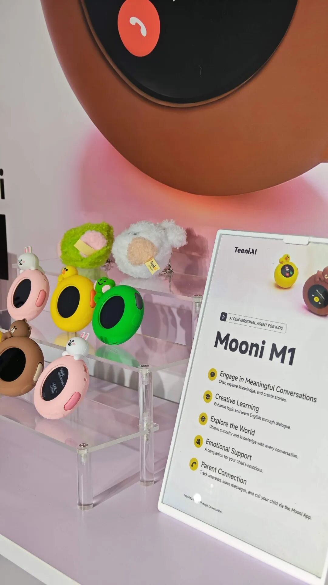
螞蟻和美團投的中國初創硬件企業looki，出展的隨身產品Looki L1，主打日常記錄和陪伴，通過視頻、音訊等形式記錄。
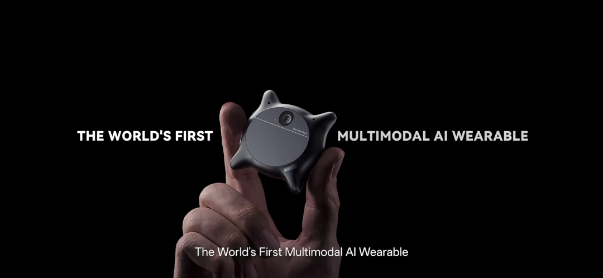
深圳李澤湘教授科創學院孵化的初創公司話話糖，創始人是個00後，做的面向3-8歲小朋友的，AI口袋電子寵物Sweekar，也被圍觀了。
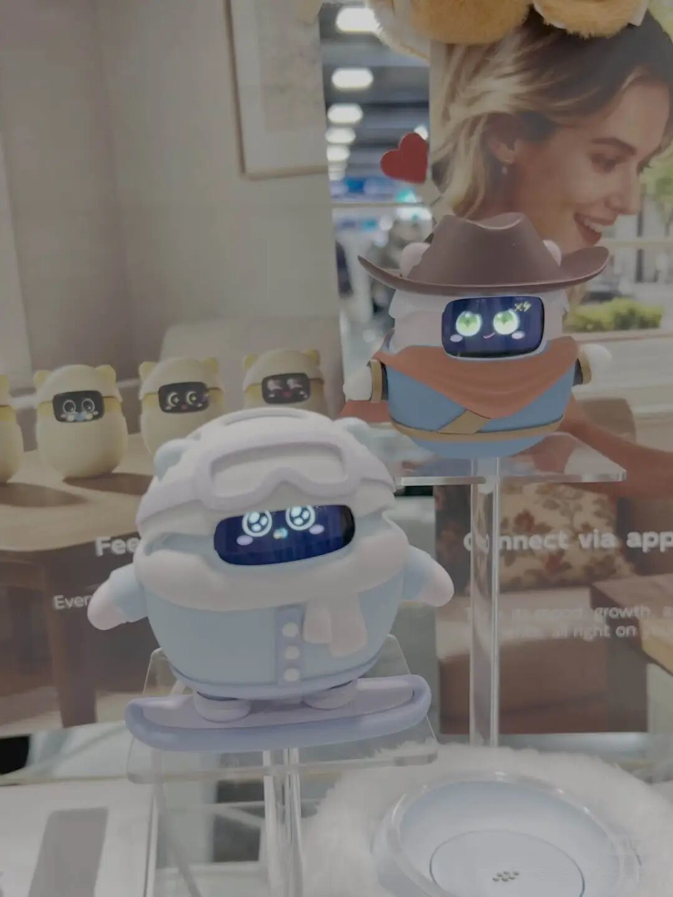
消費級的外骨骼產品也成為了今年CES大熱門，中國公司更是不少，比如這次參展的就有極殼科技、傲鯊科技，他們帶來的外骨骼產品從健康助殘走向了户外運動，成為了少數科技發燒友的選擇，可以在運動場景下幫助減負。
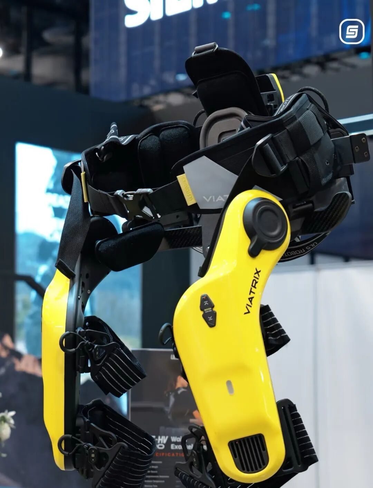
圖｜傲鯊外骨骼產品
近年非常火爆的消費級3D打印機，也去了多家品牌，比如拓竹科技、創想三維、xTool等（產品看起來就跟打印機沒啥區別，所以我們就不放圖了）。
回想前兩年CES，不少AI原生硬件產品也曾驚豔亮相，再迅速涼涼。經過幾波沖刷，現如今推出市場的AI硬件產品有了更強的落地能力，至少核心解決“用起來”的問題，而不單單是讓消費者們為一個概念買單。也會發現，所有人都有着更高的追求，讓未來時代的交互不再依賴App和手機，也不再對着屏幕輸出，真正做到無感和隨時。
最後的最後，去年在CES上演百鏡大戰的AI眼鏡賽道，到2025年末時已經被看作是一個確定性賽道了，不少企業的出貨量邁過了10萬台，而最早的開路者Ray-Ban Meta ，2026年給供應鏈的預期是1000萬台，有幸的是，這一輪AI硬件的機會可能更多的是被中國企業拿下。
（實習生尚志芳對此亦有貢獻）